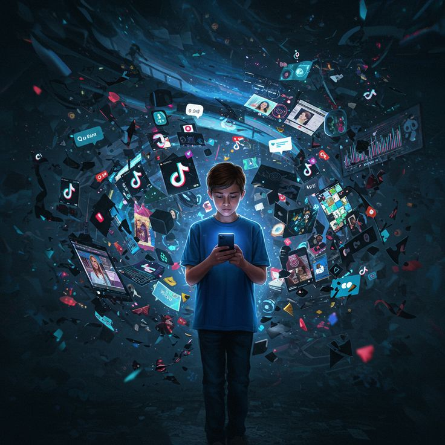

Navegação Teclado
Foco Visível & Navegação Sem Mouse
Garantia de navegação por tecla Tab para pessoas com deficiência motora ou visual.
A verdadeira inovação digital não deixa ninguém para trás. Criar um ambiente acessível significa garantir que pessoas cegas, surdas, com mobilidade reduzida ou neurodivergentes possam navegar, aprender e trabalhar com plena autonomia.
.jpg)
Da evolução biológica à evolução digital: a tecnologia como nova etapa da história humana.
.jpg) União e diversidade: a colaboração de diferentes perspetivas
na sociedade.
União e diversidade: a colaboração de diferentes perspetivas
na sociedade.
A acessibilidade digital não é um luxo técnico, mas uma garantia constitucional de direitos fundamentais. Quando portais educacionais e sistemas de processos seletivos são desenhados com acessibilidade:
Construir sites acessíveis exige que desenvolvedores compreendam como as tecnologias assistivas interpretam o código-fonte. O uso de **HTML semântico** é o pilar fundamental dessa construção.
Tags como <main>,
<nav> e
<article> orientam os leitores de tela na
navegação do conteúdo.
Descrições textuais em imagens e papéis ARIA corretos informam estados de elementos interativos complexos.

A sobrecarga digital e a necessidade de interfaces mais acessíveis e organizadas..jpg) A IA transformando cidades, campo e o futuro do trabalho e da
educação.
A IA transformando cidades, campo e o futuro do trabalho e da
educação.
A Inteligência Artificial Generativa oferece possibilidades sem precedentes para remover barreiras de comunicação. No entanto, o fator humano continua essencial para evitar o risco de reprodução de viéses e erros.
Geração instantânea de textos alternativos (Alt Text), síntese de áudio realista, tradução automática em tempo real para Língua de Sinais e simplificação de linguagem complexa para pessoas neurodivergentes.
Modelos de IA podem gerar descrições genéricas, alucinações ou preconceitos algorítmicos. É dever ético das equipes revisar e auditar todo o conteúdo gerado por IA antes de sua publicação.
Todas as imagens informativas possuem texto alternativo objetivo e recurso integrado de audiodescrição em texto e síntese de voz.
Garantia de navegação por tecla Tab para pessoas com deficiência motora ou visual.
Softwares como NVDA e TalkBack leem o conteúdo textual estruturado para pessoas cegas.
Acomodação visual para pessoas surdas ou com deficiência auditiva em conteúdos multimídia.